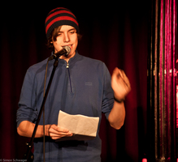
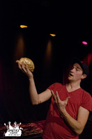
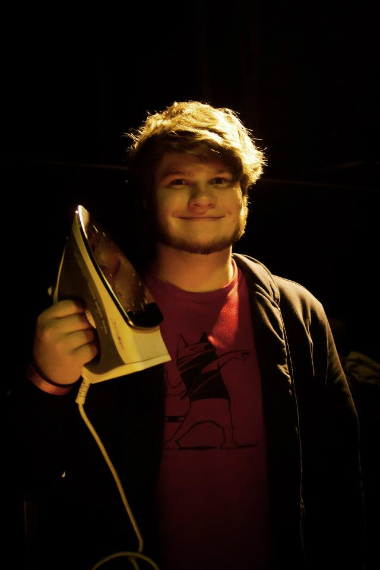
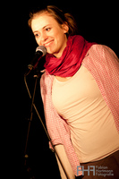
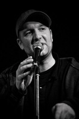

Bei einer Feier zu 30 Jahren kultureller Arbeit darf ein Hochgenuss, wie ein Poetry Slam natürlich nicht fehlen. Darum haben wir in Zusammenarbeit mit Stefan Unser (aka WortArtiG),
der ebenfalls die Karlsruher Slam wie etwa im KoHi organisiert, eine Poetry Slam Show der Extraklasse auf die Beine gestellt. So können wir wir euch Poeten aus ganz Deutschland
präsentieren, die für abendfüllende Gestaltung sorgen werden. Wir präsentieren:
Max Kennel und Indiana Jonas - das allesüberragende Slam-Team des Südens
Jan Philipp Zymny - der amtierende deutsche Vize-Meister
Clara Nielsen - Windschattengewächs aus Kiel, mit über 80 Slam-Siegen im Gepäck
Florian Cieslik - Urgestein der Poetry Slam-Szene
Jeder Einzele ein Bühnen-Event - gemeinsam eine poetische Eskalation
Mehr Infos zu den Poeten gibt es hier:
|  |
Irgendwann anno ’91 problemlos auf die Welt geschlittert; mit den Beatles, den Stones, den Brüdern Grimm, Michael Ende und Astrid Lindgren erzogen, auf einem katholischen Klostergymnasium verdorben, von Berlin geträumt und letztlich im viel schöneren Bamberg gelandet; von seinen Eltern mit seinen Genen, von Thomann mit einer Gitarre und von Frauen mit genug Stoff für Lieder ausgestattet, begann der für seine Größe doch recht kleine Max Bühnen zu besteigen, erst mit Liedern, dann mit Texten, jetzt mit beidem. Max hat am Samstag, den 13.04. seinen Titel bei den Bayrischen Poetry Slam Meisterschaften in Augsburg verteidigt und ist somit Bayrischer Poetry Slam Meister 2012 und 2013. |
|
 Foto: Tanja M. Gleiser |
Indiana Jonas ist seit Jahren der erfolgreichste Slam Poet aus Rheinland-Pfalz. |
|  |
1993 geboren, entdeckte der Wuppertaler Jan Philipp Zymny (bürgerlicher Name Johannes Philipp Wolfgang Amadeus Kopernikus Zymny) früh seine Liebe zu Quatsch und Unsinn. In seiner Schulzeit verlieh er diesem Drang durch fantasievolle Referate, Aufsätze und Hausaufgaben Ausdruck. So schrieb er beispielsweise stets mehr Xe als nötig, um,wie er sagte, einem Buchstaben, der von der deutschen Sprache so vernachlässigt werde, auch das Gefühl zu geben gebraucht zu werden. Zur Zeit verdingt sich Jan Philipp Zymny nach eigenen Angaben als Boxer, Abenteurer, Hochseejäger und Großwildangler. Doch all diese Erfolge und die Zuneigung eines italienischen Marionettenbaumeisters konnten ihn nicht darüber hinwegtäuschen, dass sein größter Traum unerfüllt blieb: Er wollte nichts mehr, als ein richtiger Junge sein. |
|  |
Clara Nielsen, geboren und aufgewachsen in Schleswig-Holstein, tritt seit November 2007 auf Poetry Slams und Lesungen im gesamten deutschsprachigen Raum auf. Ihren ersten Text für Publikum schrieb sie 2007 für den Landtag Schleswig-Holstein. Im Jahr 2008 gewann sie die Lesebühne im Literaturhaus Schleswig-Holstein. Mit über 80 Siegen auf vielen großen Poetry Slams zwischen Kiel und Zürich, Düsseldorf und Linz gilt sie als eine der erfolgreichsten deutschen Slam-Poetinnen. Sie qualifizierte sich seit 2008 jedes Jahr für die deutschsprachigen Meisterschaften im Poetry Slam und wurde 2010 vom Goetheinstitut für einen Gastauftritt nach Rom eingeladen. 2011 trat sie im Rahmen der Frauenfußballweltmeisterschaft des DFB als Mitglied der Slamnationalmannschaft auf. Im gleichen Jahr war sie eine der Autorinnen bei der „Langen Nacht der Literatur” im Staatstheater Braunschweig. 2012 stand sie im Halbfinale der deutschsprachigen Meisterschaften in Heidelberg. Clara Nielsen ist zusammen mit dem Autor Christian Ritter und Max Kennel Mitglied und Organisatorin der regelmäßigen Lesebühne „Bube, Dame, Ritter“ in Bamberg und Würzburg. |
|  |
Florian Cieslik lebt und schreibt in Köln. Florian Cieslik macht Lyrock, und dichte Geschichten. Damit bewegt er sich geschickt und pointiert zwischen Lyrik und Prosa. Mit der von ihm konzipierten Lyrock-Reihe geht er seit 2004 immer wieder auf Tour. Bei Lyrock-Abenden werden seine Perfomances musikalisch untermalt. Seit 2006 nimmt er regelmäßig und sehr erfolgreich an Poetry Slams im gesamten deutschsprachigen Raum teil, u.a. am German International Poetry Slam 2007 in Berlin, beim WDR Poetry Slam und der "SAT1 Slam Tour mit Kuttner". Bei den deutschsprachigen Poetry Slam-Meisterschaften 2008 in Zürich wurde er Fünfter. 2010 gewinnt er zwei mal hintereinander den SWR Poetry Slam. Um seine Leidenschaft für Sprache weiterzugeben, gibt Florian Cieslik Workshops zum kreativen Schreiben und Poetry Slam. 2010 leitet er in Jugendzentren und Schulen, unter dem Dach des ArtSpecial Projekts in Köln „Poetry Slam-Workshops“ und bringt 30 Schüler zu Ihrem ersten umjubelten Auftritt mit einem selbstverfassten Text vor 400 Zuschauern. Zu seinen Veröffentlichungen zählen: "Dynamit in der Schublade", "Über den Tellerand" und Diverses in der "Junge Lyrik" – Reihe. Sein Gedicht „eilig habend“ wird 2009 in die klassische Lyriksammlung „Gedichte zur Weihnacht“ im Reclamverlag aufgenommen, in der Cieslik nun neben Slampoeten wie Schiller, Rilke, Ringelnatz und Gernhardt steht. |
Kommt also früh und sichert euch einen guten Platz! Fünf überragende Slammer, die uns ein Fest der Poesie bescheren werden, warten auf euch!